1. SE 423: Introduction to MechatronicsLecture 22: 3D Vision, Structure from Motion, and Deep DepthMarius Juston
Monday, April 13th, 2026
2. Review – 5-minute partner discussion
Talk to the person next to you and answer these questions.
- Why do we use CIE Lab color space instead of RGB for object tracking?
- How do we calculate the centroid of a binary blob using Image Moments?
- If a red ball enters a dark shadow, which CIE Lab parameter drops? Which ones remain constant to help us track it? (You can look at the website https://marius-juston.github.io/SE-423---Class-Material/color_spaces.html ) for a reminder.
- Put an object in front of yourself, grab it with both eyes open, now close one eye and try to grab it again. Did you feel like it was a different distance than expected?
3. Reminders
Office Hours:
- Monday: 4-6 PM, Neel
- Tuesday: 11-1 PM, Lakshmi
- Tuesday: 1-3 PM, Samuel
- Tuesday: 2-5 PM, Dan & Marius
Lab: Starting Lab 7 this week. This a 2-week lab! This is the final lab! Afterwards you will just be working on your final project in your teams.
Make sure that you fill in the Google Sheet from the Announcement: https://docs.google.com/spreadsheets/d/1lh2lSsxLq3i58cWuxZ1K7XvA4rPz2CyiUasCmF61Gnc/edit?usp=sharing
Homeworks:
- Remainder of homework 5 due on Gradescope on April 21, 5PM
- Next homework is primarily the personal project due on April 22, 9AM.
-
- I would highly recommend you thinking now and maybe even starting it now if you have a good idea already!
4. In the class material questionnaire, a lot of you did not specify if there was a specific application of AI / Computer Vision / Algorithms that you were interested in. For the people that come to class what would you find useful for the final project?
5. Questions?
Homework, Lab, LabVIEW?
6. Preface
Again I would HIGHLY recommend you looking at:
- https://visionbook.mit.edu/
- The webpage is a textbook with all the math, background and information for computer vision.
- We will only be doing a tiny portion of this in this lecture (there are whole grad classes for computer vision).
- It is containerized very nicely, has lots of pictures, diagrams. Each section takes 5 minutes to read.
All the material and pictures were taken there today

7. Camera Geometry
8. The 3D to 2D project
Cameras map the 3D world into a 2D image plane.
Is this a lossy or lossless transformation? If lossy give an example.
Infinite points on a single ray maps to the exact same pixel.
However, we would like to control robots in 3D space, as such we must invert the projection.
The first step is representing the model of the camera.
If infinite 3D points map to one pixel, is the inverse function mathematically solvable with a single image?
9. The 3D to 2D project
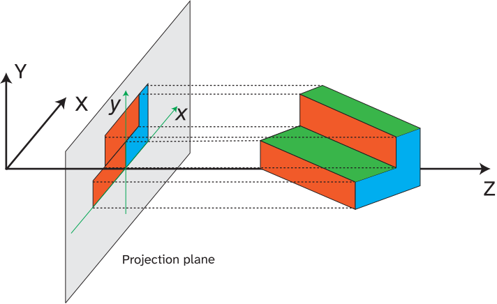
10. The Pinhole Camera Model
A pinhole camera projects 3D coordinates in the world to 2D positions on the projection plane of the camera through the straight-line path of each light ray through the pinhole.
There are 3 coordinate systems that we will use.
11. The Pinhole Camera Model
World coordinates: Let the origin of a World Cartesian coordinate system be the camera’s pinhole.
The coordinates of 3D position of a point, , in the world will be , where the axis is perpendicular to the camera’s sensing plane (projection plane).
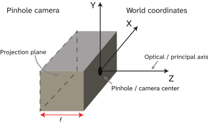
12. The Pinhole Camera Model
Camera coordinates in the virtual camera plane.
The camera projection plane is behind the pinhole and at a distance of the origin.
Because the rays get inverted through the pinhole, it is useful to reflect the project plane so that the coordinates are easier to understand
13. The Pinhole Camera Model
Image coordinates, are typically measured in pixels.
Both the camera coordinate system and the image coordinate system are related by an affine transform as we will discuss later.
14. The 3D to 2D project
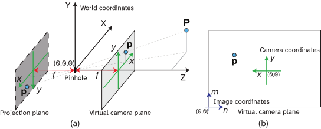
15. The Pinhole Camera Model
The pinhole model assumes the light passes through a single infinitively small aperture.
By similar triangles, a 3D point , projects to the image plane at .
The ideal projection equations are:
Where , represents the focal length.
These equations are called the perspective projection equations.
16. The Pinhole Camera Model
Under perspective projection, distant objects become smaller, through the inverse scaling by .
The perspective projection equations apply not just to pinhole cameras but to most lens-based cameras, and human vision as well. The pixel coordinated can be computed as,
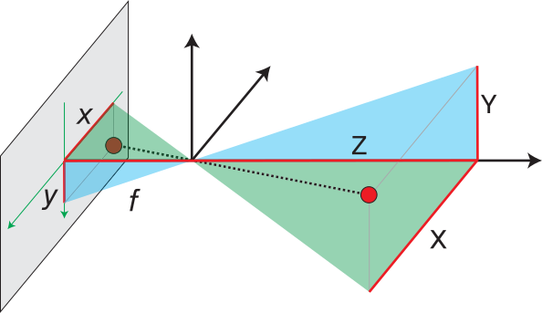
17. The Pinhole Camera Model
Homogeneous coordinates represent a vector of length by a vector of length . The transformation rule from heterogeneous to homogeneous coordinates is simply to add an additional coordinate, 1, to the heterogeneous coordinates as shown here:
To go from homogeneous coordinates back to the heterogeneous representation of the point, we divide all the entries of the homogeneous coordinate vector by their last dimension
18. The Pinhole Camera Model
As we have already discussed, the perspective projection equations are nonlinear and involve a division by the point’s -location.
That is, a 3D point with coordinates appears in the image at coordinates
This division complicates algebraic relations.
Projective geometry and homogeneous coordinates help that simplify those algebraic relations and thus simplify many of the equations that involve geometric transformations.
19. The Pinhole Camera Model
Consider a coordinate system with the origin fixed at the center of projection of the camera and the 3D point in homogeneous coordinates,
We can verify that the that matrix, , multiplies, by the vector describing the 3D , returns the position of its perspective projection!
20. The Pinhole Camera Model
We thus can convert the 3D coordinate to it’s projected 2D position !
Transforming the product vector from homogeneous coordinates to heterogeneous coordinates yields
21. Camera Intrinsics
22. The Pinhole Camera Model
This formulation is one of the biggest benefits of using homogeneous coordinates. It allows writing perspective projection as a linear operator in homogeneous coordinates.
We have the world in pixels but that is not very useful! We want to use an actual measurement system such as metric or feet.
To do this we need to find the pixel to measurement unit relationship!
23. The Pinhole Camera Model
Cameras translate the world into pixels, but the relationship between the 3D scene and the 2D image captured by the camera is not always straightforward.
To start with, the world is measured in units of meters while points in images are measured in pixels.
Factors such as geometric distortions can influence this relationship, and we need to account for these elements in our camera model.
24. The Pinhole Camera Model
We need to account for the perspective projection of the point, , described in camera coordinates, to pixel coordinates in the sensor plane of the camera.
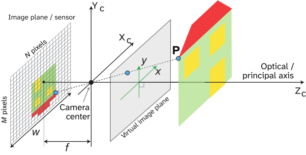
25. The Pinhole Camera Model
The units of the position in pixel space may be different than those of the world coordinates, which scales the focal length, , to some other value. Let’s call that value .
Where the constant , is related to the physical camera parameters:
Where is the focal length (in meters), is the width of the senor in meters, and is the image width in pixels. The ratio is the number of pixels per meter in the sensor
26. The Pinhole Camera Model
Also, the image center might not be the pixel . If the optical axis coincides with the image center, we need to apply a translation so that a 3D point on the optical axis (the location of the pinhole, ) projects to .
For example, for an image of size , we will have and
27. The Pinhole Camera Model
It is also possible that the pixels are not square, in which case we must account for different scaling along both axis:
Why might and , be slightly different on cheap CMOS sensors?
28. Camera Extrinsics
29. The Pinhole Camera Model
In all our previous examples, we have been assuming that the camera origin was located at the origin of the world coordinate system with the optical axis aligned with the world
-axis.
In practice, there will be many situations where placing the camera at a special position will be more convenient.

30. The Pinhole Camera Model
Let’s say that our camera has its camera center displaced by vector and the axes are rotated by with respect to the world-coordinates system.
We are now given a point in the world , with its coordinates are described in terms of the world-coordinate system. Our goal is to find how that point projects into the image captured by the camera.
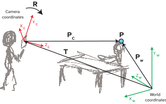
31. The Pinhole Camera Model
Based on coordinate transformations of the camera, we can describe the transformation as,
32. The Pinhole Camera Model
Using homogeneous coordinates, to describe the transformation from world coordinates to coordinates, the result is,
The camera parameters, and , that relate the camera to the world are called the extrinsic camera parameters. These parameters are external to the camera.
We have seen now how to transform a point described in the world-coordinate system into the camera-coordinates system. We can now use the intrinsic camera parameters to project the point into the image plane.
33. The Pinhole Camera Model
The concatenation of the extrinsic and intrinsic transformation matrices yields the desired transformation matrix, which will transform world coordinates to rendered pixel coordinates:
How many degrees of freedom does the extrinsic matrix have?
The full 6! Translation + Rotation in 3D
34. The Pinhole Camera Model
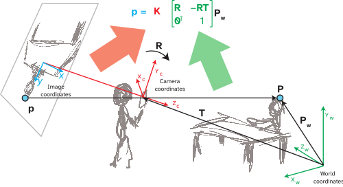
35. The Pinhole Camera Model
Real lenses are not perfect pinholes; they bend light, causing distortion.
Radial distortion (barrel/pincushion) occurs due to spherical lens shapes.
Tangential distortion occurs if the lens is not perfectly parallel to the CMOS sensor.
Why do we need to undistort an image before doing 3D geometry calculations?
We assume that all our math is planar and linear. If we have the distortions, we have non-linear systems and thus our math no longer works!
36. The Pinhole Camera Model
Barrel
Pincushion
Mustache
37. Stereo Vision
38. Stereo Vision
How do we figure out how far an object is?
Keep both of your eyes open and then try to grab an object.
Now close one of your eyes and try picking it up. Does it feel different? Harder to judge the distance?
Now alternate closing the left and right eyes, do they both see the same thing? No? This is exactly what stereo vision exploits!
39. Stereo Vision
There are two typical methods to check for distance:
The first method measures the location of the boat relative to the horizon line. An observer is standing on top of an elevated point at a known height .
The observer measures the angle You can derive the distance using simple trigonometric relation.
This method is not very accurate and might require high observation points, which might not be available, but it allows as to estimate with a single observation point.
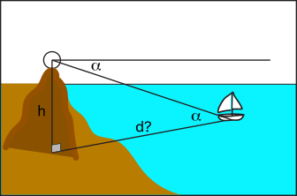
40. Stereo Vision
The second method requires two different observation points along the coast separated by a distance .
At each point, we measure the angles, and , between the direction of the boat and the line connecting the two observation points.
Then we can apply the following relation:
This method is called triangulation. For it to work we need a large distance so that the angles are significantly different from 90 degrees.
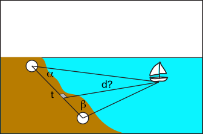
41. Stereo Vision
Stereo vision uses two cameras separated by a known baseline distance. By observing the same 3D point from two different views, we can triangulate its position.
When observing the world with two eyes we get two different views of the world. The relative displacement of features across the two images (parallax effect) is related to the distance between the observer and the observed scene.
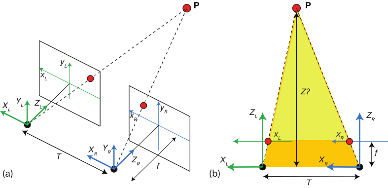
42. Stereo Vision
A simple way to triangulate the depth, , of a point visible in both images is through similar triangles. The two triangles shown in are similar (same angles), and so the ratios of their height to base must be the same. Thus we have:
43. Stereo Vision
Solving for we get that:
44. Stereo Vision
The difference in horizontal position of any given world point, , as seen in the left and right camera images, , is called the disparity, and is inversely proportional to the depth of the point for this configuration of the two cameras–parallel orientation.
The task of inferring depth of any point in either image of a stereo pair thus reduces to measuring the disparity everywhere.
What is a problem in this situation in the real world?
One important assumption we have made is that we know the two corresponding projections of the point ; however, in the real world the two images will be complex, and we will not know which points in one camera correspond to the same 3D point on the other camera.
This is what the problem of stereo matching solves!
45. Stereo Matching
46. Stereo Vision
Stereo matching is the process of finding key points inside the images and finding the displacement between the two images.
Like your eyes, you don’t necessarily notice individual pixels change but you can see key points (corners, objects). That have are different positions from one eye to another.
You then match the difference between the 2 images to match the points and retrieve .
47. Stereo Vision
We know that depth is is inversely proportional to disparity, but how do we find the exact same point in both images to calculate disparity?
A naive approach is a 2D search: take a patch of pixels from the left image and slide it across the entire right image to find the best match.
What is the problem with that?
This is computationally expensive for real-time mechatronics; searching a image takes over comparisons per feature!
Furthermore, if the image has repetitive textures (like a brick wall), the algorithm will easily match the wrong brick, destroying our depth calculation!
48. Stereo Vision
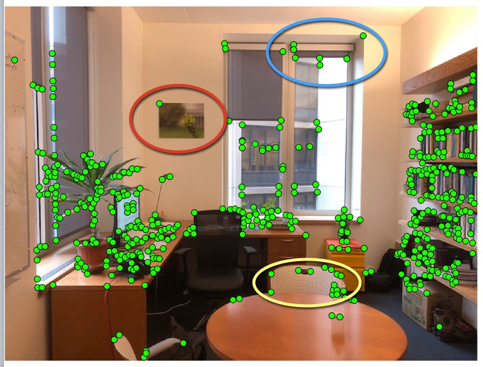
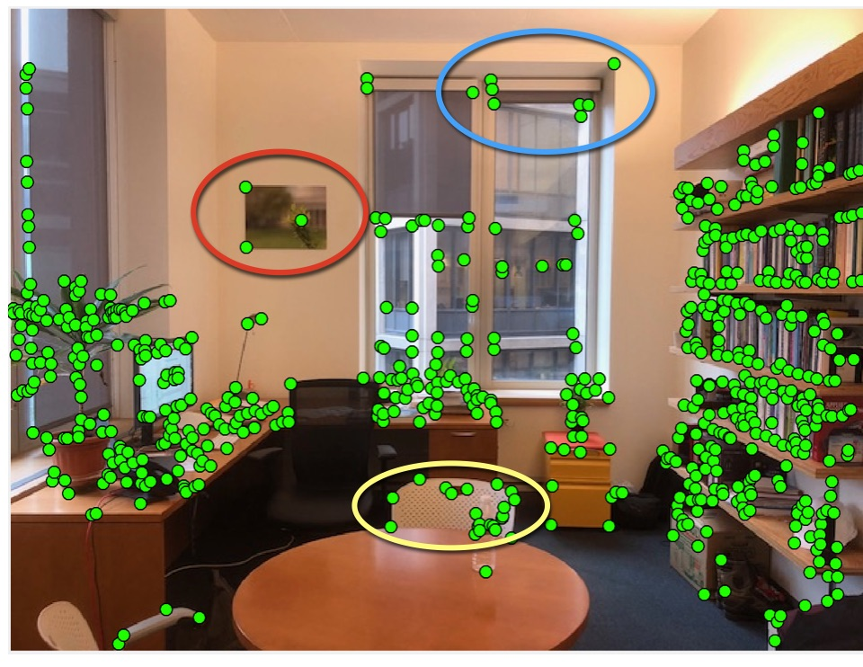
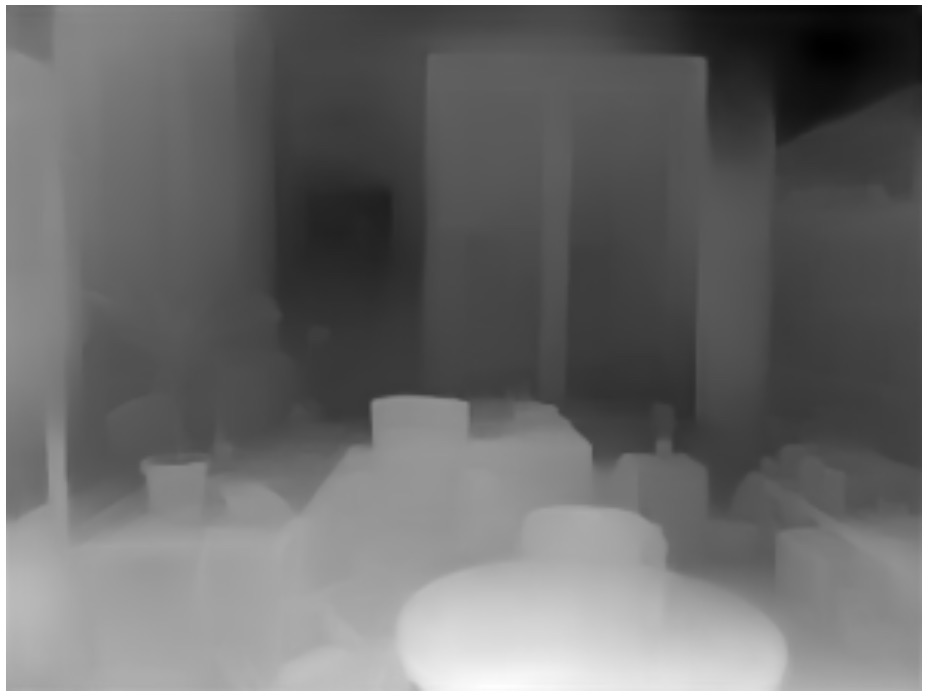
49. Stereo Vision
The task of finding disparity at each point is often broken into two parts:
- finding features, and matching the features across images
- interpolating between, or adjusting, the feature matches to obtain a reliable disparity estimate everywhere.
These two steps are often called matching and filtering, because the interpolation can be performed using filtering methods.
50. The Essential and Fundamental Matrices
51. Review – 5-minute partner discussion
Talk to the person next to you and answer these questions.
- Is it possible to figure out the distance to an object using a single camera? If so, what are the constraints? If not what needs to be done?
- When the target matching point is placed further away, does that increase the disparity or decrease it? Disparity is the pixel difference between the left and right images.
- What was the conversion of heterogenous coordinates to homogeneous coordinates?
- What was the advantage of using homogeneous coordinates?
52. Reminders
Office Hours:
- Monday: 4-6 PM, Neel
- Tuesday: 11-1 PM, Lakshmi
- Tuesday: 1-3 PM, Samuel
- Tuesday: 2-5 PM, Dan & Marius
Lab: Starting Lab 7 this week. This a 2-week lab! This is the final lab! Afterwards you will just be working on your final project in your teams. Make sure that you fill in the Google Sheet from the Announcement, otherwise a “random” group will be assigned: https://docs.google.com/spreadsheets/d/1lh2lSsxLq3i58cWuxZ1K7XvA4rPz2CyiUasCmF61Gnc/edit?usp=sharing
Homeworks:
- Remainder of homework 5 due on Gradescope on April 21, 5PM
- Next homework is primarily the personal project due on April 22, 9AM.
-
- I would highly recommend you thinking now and maybe even starting it now if you have a good idea already!
53. Questions?
Homework, Lab, LabVIEW?
54. Stereo Vision
Until now we have considered only the case where the two cameras are parallel, but in general the two images will be produced by cameras that can have arbitrary orientations.
Does the disparity relation still match if the cameras have different orientations?
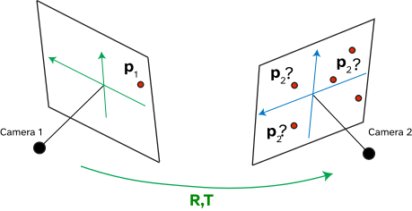
55. Stereo Vision
Assume we know the intrinsic and extrinsic parameters for both cameras, and we thus know the generic translation and rotation. How do we find the point produced form one image to another?
Are there any geometric constraints that can help us to identify candidate matches?
56. Stereo Vision
We know that the observed point in camera 1, , corresponds to a 3D point that lies within the ray that connects the camera 1 origin and (shown in red). Therefore must be constrained to constrained to be within the line that results of projecting the ray into camera 2.
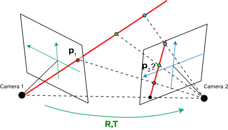
57. Stereo Vision
The first point is the projection of the camera center of camera 1 into the camera 2 plane.
58. Stereo Vision
The second point is the projection of into the camera 2 plane. Since we know the intrinsic and extrinsic parameters, we can easily compute these points. We have just reduced a massive 2D search problem into a simple 1D line search!
59. Stereo Vision
The epipolar plane is the plane that contains the two camera origins and a 3D point,
The epipolar lines are the intersection between the epipolar plane and the camera planes. When the point moves in space, the epipolar plane and epipolar lines change.
The epipoles are the intersection points between the line that connects both camera origins and the camera planes. Therefore, all the epipolar lines intersect at the same epipoles.
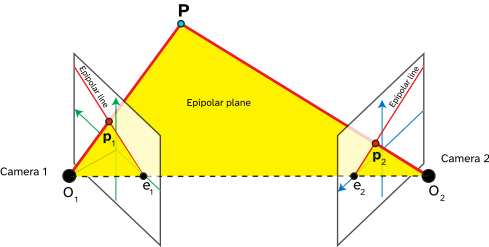
60. Stereo Vision
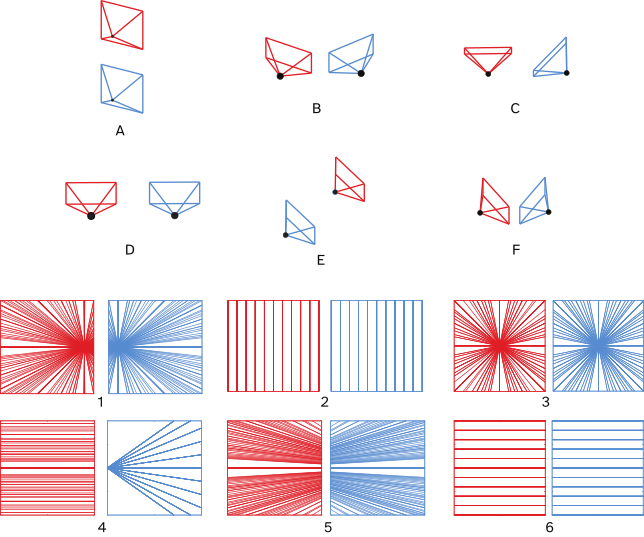
A-2, B-5, C-4, D-6, E-3, F-1
61. Stereo Vision
If we have the 3D point in the camera 1 and 2’s coordinates systems as , both systems are related as:
The 3D point , projects into camera 1 at coordinates .
We can get the following equality:
Where , represents the cross product
The matrix , represents the essential matrix.
62. Stereo Vision
If we divide equation by we will obtain the same relationship but relating the image coordinates:
This equation relates the coordinates of the two projections of a 3D point into two cameras.
If we fix the coordinates from one of the cameras, the equation reduces to the equation of a line for the coordinates of the other camera, which is consistent with the geometric reasoning that we made before.
63. Stereo Vision
We have been using camera coordinates. If we want to use image coordinates (pixels), in homogeneous coordinates
What do we need to do? (What do we use to transform camera to pixel coordinates?)
We need to use the intrinsic camera parameters!
Where is the fundamental matrix.
The fundamental and essential matrices are related as such:
64. Stereo Vision
Stereo matching relies on finding distinct corners or textures (features) to match across the epipolar lines.
What happens if a robot is navigating a pristine, featureless environment like a hospital corridor or an empty warehouse?
No features mean no stereo matches. No stereo matches mean no depth.
The robot is effectively blind.
If the environment lacks natural geometry, we must engineer the environment by adding artificial, features.
65. April Tags
66. Stereo Vision
AprilTags are a visual marker system, artificial markers designed explicitly for fast, robust computer vision detection.
Unlike QR codes, which hold massive amounts of data (like URLs or executables), AprilTags hold a tiny amount of data (just a single ID number), optimized for geometric localization
The high-contrast black and white square border allows gradient algorithms to easily find the tag's four corners from almost any angle or lighting condition.
By knowing the exact physical size of the printed tag, we can instantly deduce how far away it is based on its pixel size in the image.
Why is a square a better shape for a visual marker system than a circle?
67. Stereo Vision
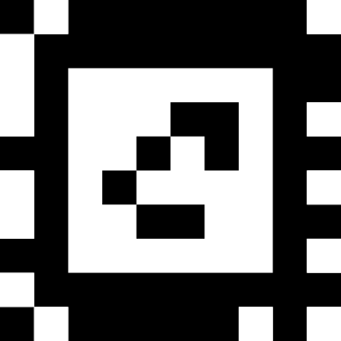
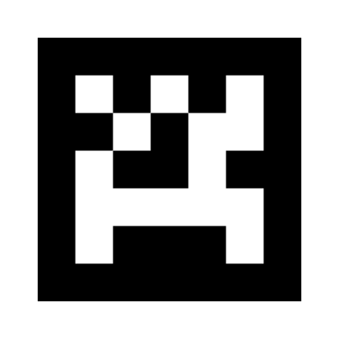
68. Stereo Vision
Because the AprilTag is perfectly flat, the math simplifies from 3D projection to a 2D-to-2D planar mapping.
This mapping is governed by the Homography matrix , a matrix that transforms points on the tag to pixels on the sensor:
By finding the four corners of the tag in the image, we can solve for the 8 degrees of freedom inside using Direct Linear Transformation (DLT).
This means we can perfectly "un-warp" the tag to read its ID, regardless of the camera's viewing angle!
69. Stereo Vision
If an AprilTag is perfectly parallel to the camera sensor, what geometric transformation does mostly represent?
Identity:
Translation
Reflection
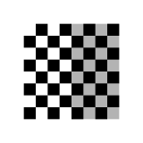
70. Stereo Vision
If an AprilTag is perfectly parallel to the camera sensor, what geometric transformation does mostly represent?
Scale:
Rotate
Shear
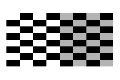
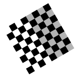
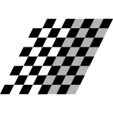
71. Stereo Vision
Applying starching and skewing can transform squares into trapezoids, which follows the perspective transform.
72. Stereo Vision
The true power of the AprilTag is that we can extract the camera's exact 3D position and rotation from just one image!
Because encapsulates the camera's projection, we can decompose it into our extrinsic rotation and translation matrices.
If we multiply the homography by the inverse of our camera's intrinsic matrix , the columns of the resulting matrix give us the exact 3D orientation of the tag in the world.
We have just achieved retrieving the 3D coordinates without needing a stereo camera pair!
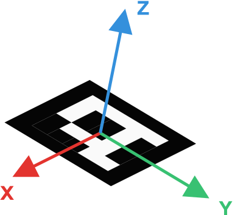
73. Stereo Vision
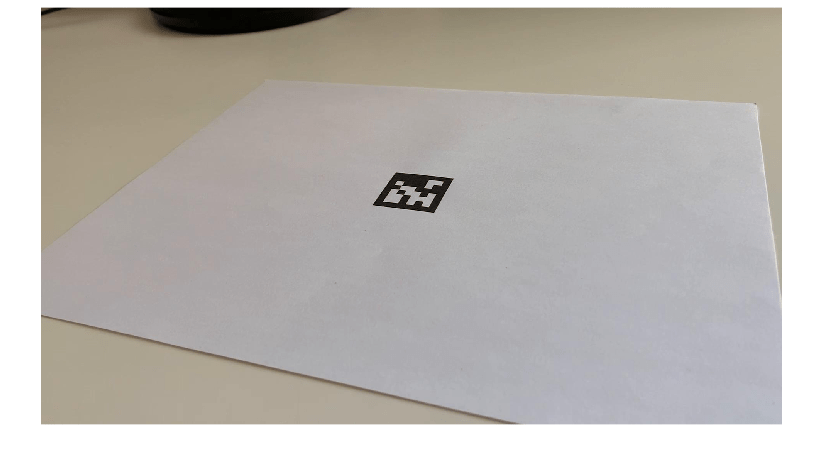
74. Stereo Vision
75. Stereo Vision
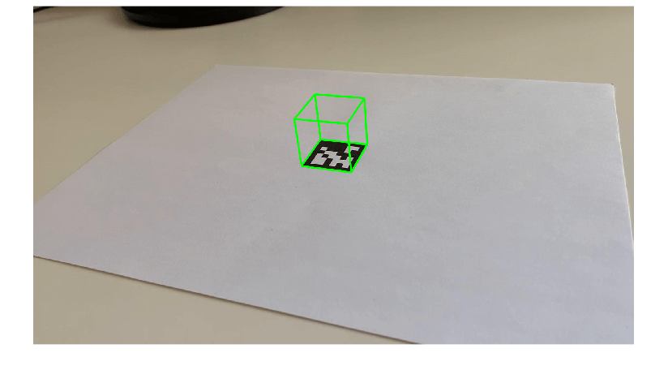
76. Stereo Vision
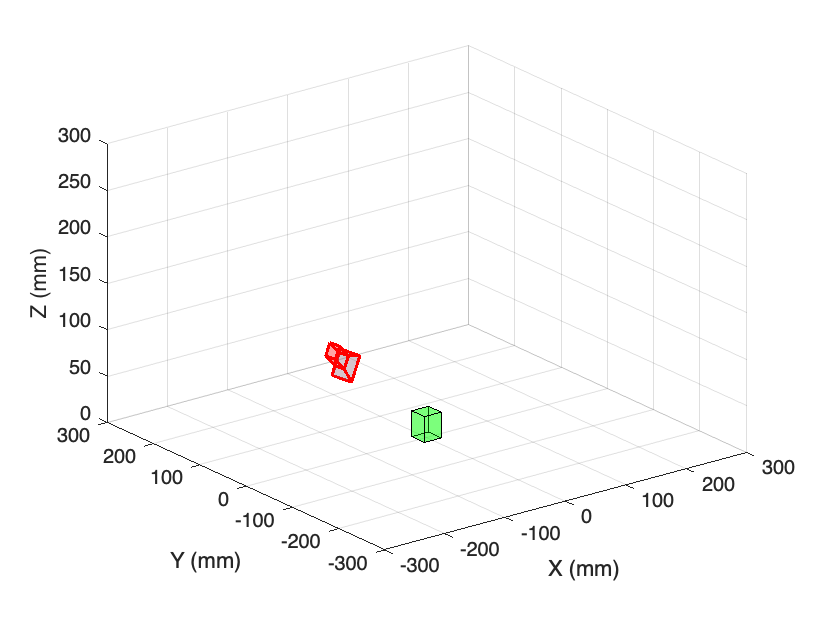
77. Stereo Vision
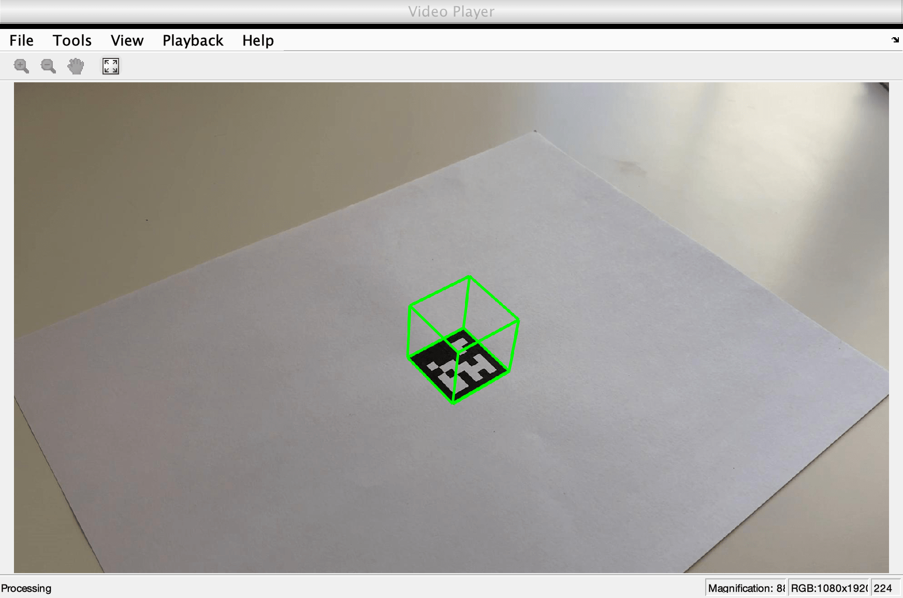
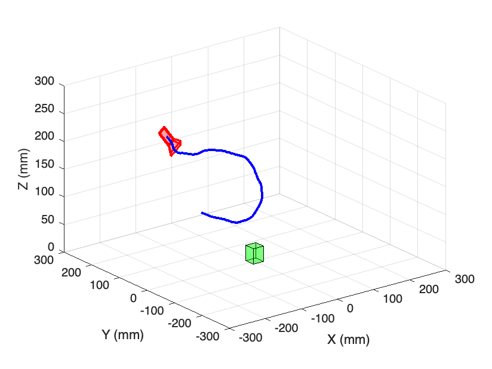
78. Stereo Vision
% Loop over remaining video frames.
while hasFrame(reader)
% Read next video frame.
I = readFrame(reader);
% Estimate AprilTag pose.
[~, ~, tagPose] = readAprilTag(I, tagFamily, intrinsics, tagSize);
% Update the tag pose to have z-axis pointing out of the tag.
tagPose = rigidtform3d(tagPose.A*tform.A);
% Project cuboid vertices from the world to image.
projectedVertices = world2img(cuboidVertices, tagPose, intrinsics);
% Insert cuboid into video frame.
augmentedImage = insertShape(I, "projected-cuboid", projectedVertices, ...
ShapeColor="green", LineWidth=6);
% Display the augmented video frame.
player(augmentedImage)
% Update the camera position in the virtual scene.
camExtrinsics = pose2extr(tagPose);
cam.AbsolutePose = camExtrinsics;
% Update camera trajectory in the virtual scene.
addpoints(camTrajectory, ...
camExtrinsics.Translation(1),...
camExtrinsics.Translation(2),...
camExtrinsics.Translation(3));
% Flush the graphics pipeline.
drawnow limitrate
end
% Create a video player to display video content.
player = vision.VideoPlayer();
% Create an animated line to display camera trajectory.
camTrajectory = animatedline(ax, ...
camExtrinsics.Translation(1),...
camExtrinsics.Translation(2),...
camExtrinsics.Translation(3),...
Color="blue", ...
LineWidth=2);
79. Single View Metrology
80. Stereo Vision
AprilTags are great, but what if we only have one camera and cannot modify the environment with stickers?
What would you do?
We can use Single View Metrology: extracting 3D measurements from a single 2D image using the inherent, known geometry of the scene.
Under perspective projection, do parallel lines in the 3D world appear parallel in the images?
No, they intersect! What is the name of the intersection point?
The Vanishing Point!
81. Stereo Vision
What building is closer? Why do you think so?
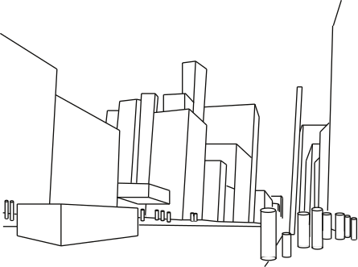
82. Stereo Vision
We perceive everything we see in the sketch as 3D, even when we know that it’s merely a 2D image. Our 3D processing is ingrained that we cannot easily switch off.
We are aware that it is just a collection of lines and geometric figures drawn on a flat piece of paper, but the 3D interpretation transforms the way in which we perceive the sketch.
Linear perspective uses parallel and orthogonal lines, vanishing points, the ground plane and the horizon line to infer the 3D scene structure from a 2D image.
83. Stereo Vision
In perspective projection, 3D lines project into 2D lines in the camera plane. Let’s start writing the parametric vector form of a 3D line using heterogeneous coordinates.
We can parameterize a 3D line with a point , and a direction vector as:
The 3D point moves along a line when the independent variable goes from to . A camera located in the world coordinates origin will observe a 2D line resulting from projecting the 3D line into the camera plane.
84. Stereo Vision
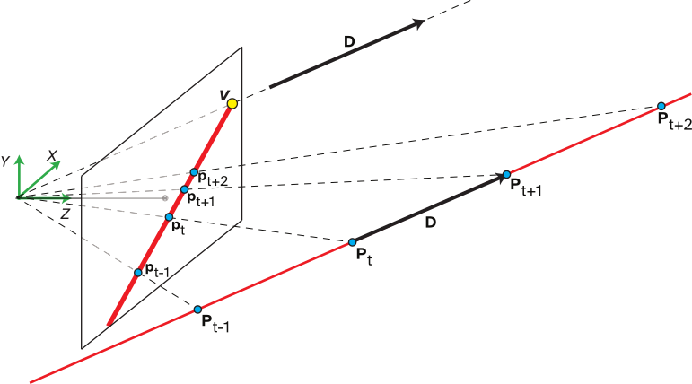
85. Stereo Vision
We can get the equation of the 2D line that appears in the image by using the perspective projection equations, resulting in:
Even though a line in 3D space extends infinitely, its 2D projection doesn’t. According to equation, at the limit when goes to infinity, the line converges to a finite point (Vanishing Point):
86. Stereo Vision
Each group of parallel lines converges to a different vanishing point. Lines that are parallel to the camera plane remain parallel as they converge to a vanishing point in infinity.
Vanishing points are very useful to recover the missing depth of the scene as we will see later. The human visual system also makes use of vanishing points for 3D perception
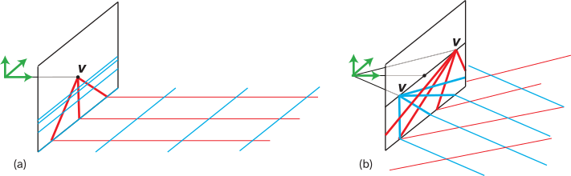
87. Stereo Vision
The vanishing point, in homogeneous coordinates, is the result of projecting using the camera model,
it shows that the vanishing point coordinates do not depend on camera translation.
Only a camera rotation will change the location of the vanishing points in an image.
If a scene is captured by two identical cameras translated from each other, their corresponding images will have the same vanishing points.
88. Stereo Vision
Any 3D plane becomes a half-plane in the image and has a horizon line. The horizon line is the line that passes by all the vanishing points of all the lines contained in the plane.
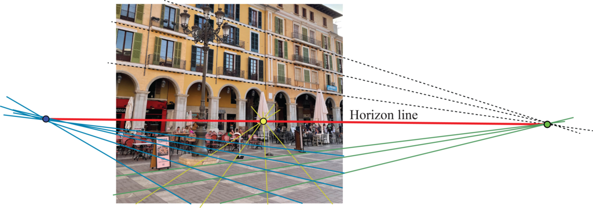
89. Stereo Vision
As parallel lines converge to the same vanishing point, parallel planes also have the same horizon line.
To detect the horizon line using homogeneous coordinates. If lines and , in homogeneous coordinates, correspond to the 2D projection of 3D parallel lines, we can obtain the vanishing point as their intersection (cross-product, ).
If we now have another set of parallel lines, contained in the same plane, we can get another vanishing point by computing their cross-product.
Finally, the horizon line is the line that passes through both points that can be computed as the cross-product of the vanishing points in homogeneous coordinates.
90. Stereo Vision
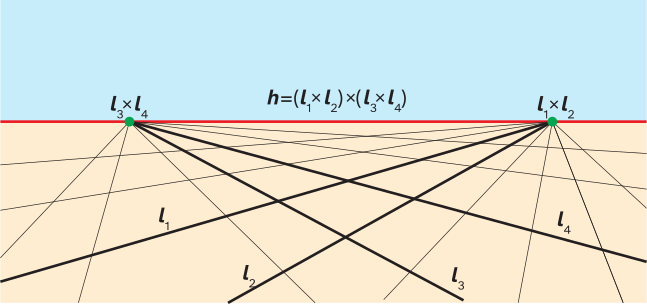
91. Stereo Vision
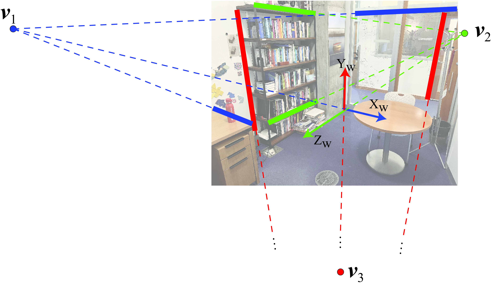
92. Stereo Vision
Let’s now use what we have seen up to now to measurement distances in the world from a single image.
We will discuss in this section how to make those measurements using three vanishing points, or just the horizon line and one vanishing point.
As we have discussed before, perspective projection transforms many aspects of the 3D world when projecting into the 2D image. What are the properties that do not get preserved?
- Angles between lines are not preserved
- The relative lengths
- Parallel 3D lines do not project into 2D parallel lines in the image, etc.
93. Stereo Vision
What properties do get preserved though?
- Straight lines remain straight
Anything else?
The cross-ratio is one of these!
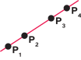
94. Stereo Vision
The cross-ratio of four collinear points is defined by the expression:
Where is the Euclidian distance between the points using heterogeneous coordinates.
The order maters!
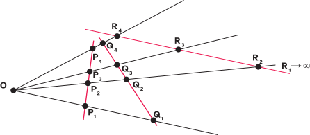
95. Stereo Vision
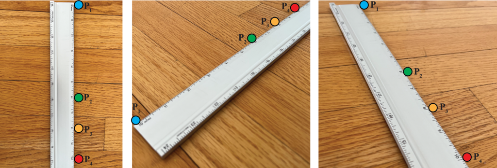
All these have the same cross-ratio (you can check that it is 1.6 for all 3 images)!
96. Stereo Vision
When one of the points is at infinity, all the terms that contain that point are cancelled out (this can also be seen by taking a limit). In the case of the , we get the cross-ratio of:
This cross-ratios value is equal to those of and !
97. Stereo Vision
So, the big problem is how do measure the height of one object given the height of a reference object in a scene.
Due to perspective projection, we can not directly compare the relative heights using distances measured over the image.
To be able to compare 3D distances using 2D image distances both objects need to be put in correspondence first.
We find common points, compute the ground plane, find the vanishing point from the horizon line and then get the intersecting point. Measure the height from the reference.
98. Stereo Vision
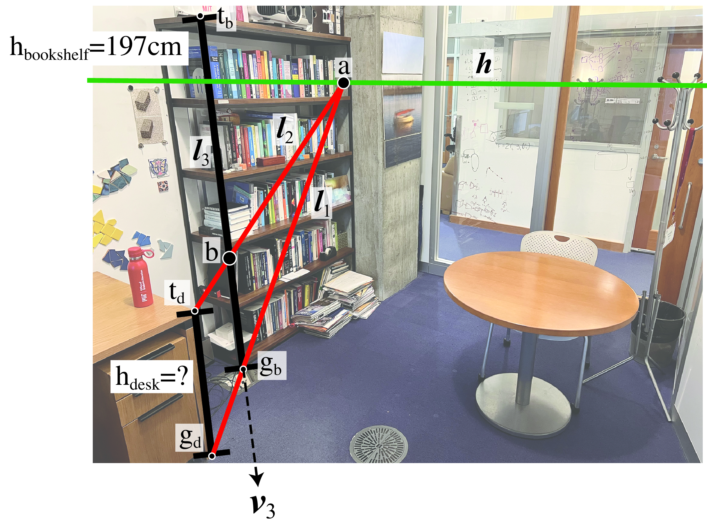
99. Stereo Vision
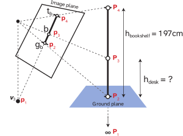
100. Stereo Vision
The method described in the previous section relies on using vertical lines in contact with the ground plane to propagate information from one point in space to another to make measurements.
The method can not work if we can not establish the vertical projection of a point into the ground plane (or any other plane of reference).
But once we have estimated the height of objects that are in contact with the ground, we can use them to propagate 3D information to other objects not directly on top of the ground.
We can estimate the height of objects that are not in contact with the ground if they are on top of objects of known height.
101. Stereo Vision
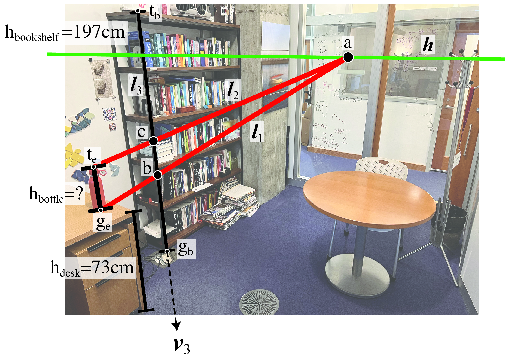